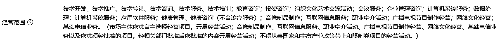

来源：https://yqqb1l50gj.feishu.cn/docx/A4UGdiBqBoH4T0xnkW5c0Nxtnkh
我们是从2014年国家发布了一个重要任务指标，从而发掘了这个项目，执业医师，执业药师，健康管理师考试培训。
这篇文讲给大家揭开一个教育项目的从0到1，在这个环节中需要走的路径和会踩的坑都一一展现给大家。
给没有做过品牌的伙伴朋友一点启示。
接下来从注册公司，课程生产，产品结构，技术制作，招生宣传，招商模式与宣传等6环节给大家剖析制作教育品牌平台需要注意的注意事项。
正常来讲，如果要注册一家教育公司必须要从当地教委取得“非学历教育培训机构资质”。 同时还要需要有稳定的办学场地和教学用房。但是实际在办理过程中，我们是属于线上培训，所以可以申请教育科技公司，也就是具有在线教育的科技型公司就可以了，申办难度也不大，在北京基本上半个月就能下来营业执照了，营业范围参照下图。

在注册公司之前，先提前多准备几个备用名，因为取名很容易重名，提前准备几个很有必要。
课程生产的主要是找到市面上比较受欢迎的老师，这样的老师也很好找，第一年就直接找在业内比较有名气一点，价位低一些的。当然在一些医院里，或者高校的研究生里边挖掘也是可以的，当然如果讲的课程知名度高一些的价位也比较高，一般按课时收费，价位在1000-5000块之间。给老师联系好当地的录课室就可以了。一般的录课室是按天收费，好的录课室收音效果和拍摄效果都比较好。录制好的课程就可以进行剪辑，添加字幕，这些工作就可以了。一般是用pr就可以。
所以完成以上的工作还需要几个教务人员，主要的工作就是给老师设计优化好PPT内容，剪辑视频，做课程讲义，答疑等服务工作。
除了课程生产之外还需要编写辅导资料，辅导资料的产出基本上就是历年的考试真题内容汇总到一起重新进行内容的总结，就出来了一本精品的考试总结。别小看辅导资料，辅导资料也是非常重要的一个环节，因为价位比较低，传播比较广，属于引流必备的内容。同时也在宣传的内容上需要下功夫的地方。
产品结构比较好做。
引流品：知识点总结，习题集，模考卷，考前冲刺卷
利润品：三个班期：基础班，一般包含基础讲解+冲刺提升
全套班：基础+冲刺+模考+应试+急救包
VIP：全套班服务两年或者可以退费模式。
以上内容就根据老师讲课的课时来设置就行，有的机构会设录播+直播的形式。
基础的就录播课，提升的就直播课。
一般的配套技术有：公司官网，手机APP，小程序，H5网页
公司官网：公司官网直接在阿里云上注册一个域名，制作一个网页内容出来，接口上配套听课网址，模考网页，题库板块。（题库板块可以单独拿出来低价引流，配合上活动，基本上一天能引流上百个学员进来）
课程服务器：这个需要租用阿里云服务器，在阿里云服务器上进行加密，存储。
手机APP和小程序，都很好制作，现在的技术已经成本非常低了。
H5网页一般是配合移动端使用的，进行宣传裂变。
我们的招生裂变阶段分为三个阶段。
第一个阶段，联系各大医院，品牌药店连锁，护士学校，与同类型公司进行交叉合作。
我们在项目之初，选择了与品牌连锁，医院进行合作，由医院和连锁药店总部进行发文推荐，全国联系各品牌单位进行合作。在这个阶段，有5个销售人员，半年的时间就收回100万，这个方式也是培训项目最常使用的办法。如果你是做本地业务的，可以联系当地的目标群体的权威机构。比如中小学教育，如果直接搞定各个区域的教育局部门，那收益也是非常可观的。如何搞定政府部门，怎么和行政部门的人群打交道，以后有机会在写一篇给大家分享。
第二个阶段，在联系了一部分连锁机构和医院之后，同时有了一部分忠实的学员，我们启动了另外一种合作模式，学员代理，也就是如果一个学员考试通过了，可以做我们的课程代理，推荐给身边的同学，我们直接给到50%的分佣。这样的模式有两个好处，第一个可以见到有收益，同时有了群众基础，可以撬动很多地方培训学校的关注。我们的第一批代理就是这样转化来的。也就是我们把学员裂变出去，让学员在下方互相传播发酵，同时我们企业内部推出招商合作，降低合作成本。同时体现在两方面，一方面当时的市场环境是招代理收加盟费，我们改了一下形式不收加盟费只收预付款。交来的费用全部可以用于课程的抵扣。第二种方面是，其他家的合作价格基本上在7折左右，我们的成本在2.5折。从两个方向上都成为了当时大家选择的热点，通过这两个方式第一年招商就达到了500万的营业额。
第三个阶段，也是爆发阶段。
18年，随着技术的发展，开始涌现了一种技术升级，开始有网校推出无logo课程模式，当时我们也有了1000家的教育合作代理，随着这个模式的出现我们第一时间调整策略，除了加盟我们品牌的模式之外可以增加贴牌合作模式，这样的模式推动下，我们撬动了当时全国各地的龙头加盟商。教育培训加盟有一短板就是与总部的竞争。所有的合作商几乎都逃避不开这一点。所以在当地的加盟商合作模式中就出现了这样的一种情况，就是需要树立自己的品牌，把学员把握在自己的手里。所以当时我们推出贴牌生产课程之后，正好迎合了教育机构想要逐步树立自己品牌的这一需求。经过一年时间拿到了1200万营业额。
以上就是一个职业教育在线品牌生成迭代的过程，写的比较粗略，感谢大家的观看，如果有任何想法，都可以在评论区留言，欢迎和大家一起生财有术~